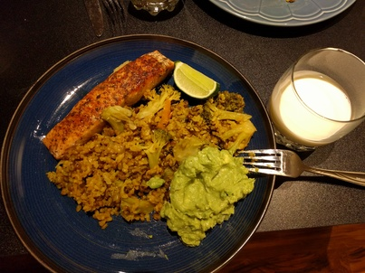
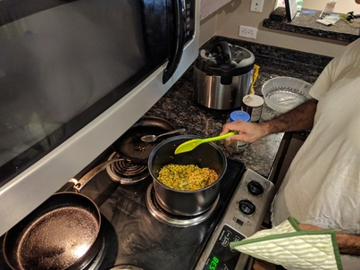

Bengali Khichuri with Salmon
 
Ingredients:
- Khichuri: Brown rice, mung beans, onions, chillies, broccoli, trumeric, lemon
- Protein: Salmon
- Fat: Avocado, chillies, salt
How to make it:
- Saute rice, beans, onions, chillies, and trumeric with some oil in a pot for 5 min. Cook with instant pot/slow cooker, or on the stove. Add brocoli toward the end.
- Cook the salmon with whatever spices you like.
- Smash the avocado, chillies (cut them super thin), and salt
Serve together and squeeze the lemon on everything.